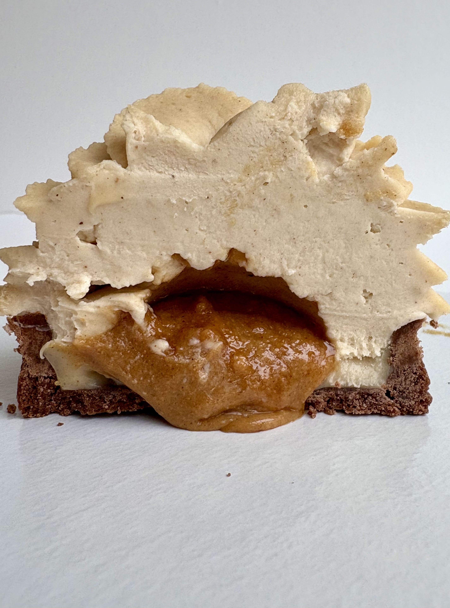

LA TARTE AUX FRAISES BIO
COMPOSITION: PÂTE SUCRÉE CACAO, XXX, XXX, XXX, XXX

Temps de préparation: XX min
Personnes: 6-8 personnes
Saison:
Une tarte aux fraise rafraichissante pour l'été vous allez l’adorer!!
Pâte sucrée cacao
- 50g gélatine
- 60g fraises
- 57g
Dans un cul de poule faire frondre xxx yYYY. Dans un cul de poule faire frondre xxx yYYY: Dans un cul de poule faire frondre xxx yYYY: Dans un cul de poule faire frondre xxx yYYY: Dans un cul de poule faire frondre xxx yYYY: Dans un cul de poule faire frondre xxx yYYY: Dans un cul de poule faire frondre xxx yYYY: Dans un cul de poule faire frondre xxx yYYY: Dans un cul de poule faire frondre xxx yYYY:
♡